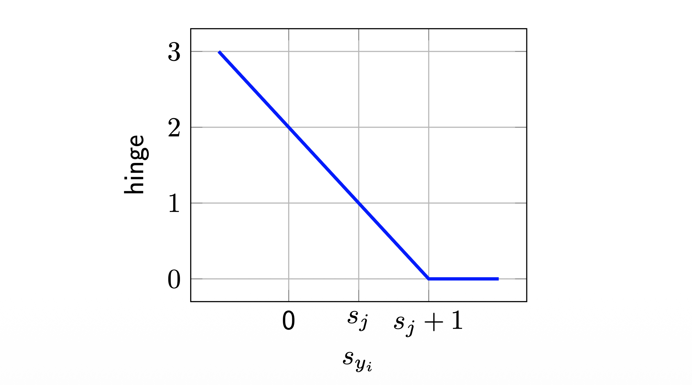
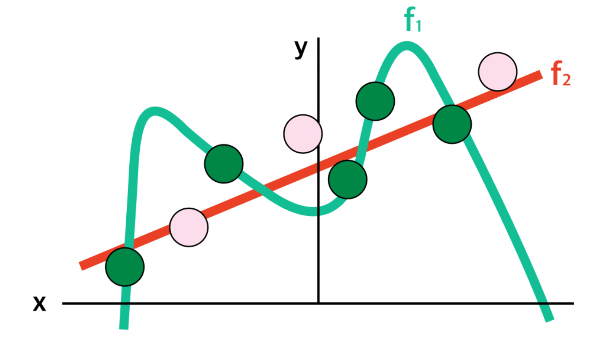

1. Introduction
지난 포스트([Lecture 2.2])에서 우리는 입력 이미지를 클래스 점수(Score)로 변환하는 선형 분류기(Linear Classifier) \(f(x, W) = Wx + b\)를 정의했다. 하지만 단순히 점수를 계산하는 것만으로는 충분하지 않다. 모델이 정답 클래스에 대해 더 높은 점수를 부여하도록 학습시키기 위해서는, 현재 파라미터 \(W\)가 “얼마나 나쁜지”를 정량적으로 나타내는 지표가 필요하다.
이번 포스트에서는 이 지표인 손실 함수(Loss Function)의 두 가지 대표적인 형태(Hinge Loss, Logistic Loss)와, 모델의 과적합(Overfitting)을 막기 위한 규제(Regularization)에 대해 다룬다.
2. Loss Functions: A Measure of “Badness”
2.1. 정의 (Definition)
손실 함수(Loss function) \(d\)는 모델의 예측값(Score)과 실제 정답(Label)을 입력받아, 그 불일치 정도를 하나의 실수값(Real number)으로 매핑하는 함수이다.
\[ d: \mathbb{R}^{C} \times \mathcal{Y} \rightarrow \mathbb{R} \]
데이터셋 \(\{(x_{i}, y_{i})\}_{i=1}^{n}\) 전체에 대한 총 손실 \(L(W)\)는 개별 데이터 포인트의 손실 \(l_i(W)\)의 평균으로 정의된다(Empirical Risk).
\[ L(W) = \frac{1}{n}\sum_{i=1}^{n} l_{i}(W) = \frac{1}{n}\sum_{i=1}^{n} d(f(x_{i}, W), y_{i}) \]
이제 \(l_i(W)\)를 구체적으로 어떻게 정의하느냐에 따라 서로 다른 성질을 가진 분류기가 만들어진다.
2.2. Multiclass Hinge Loss (SVM Loss)
첫 번째로 살펴볼 함수는 Support Vector Machine(SVM)에서 사용되는 Hinge Loss이다. 이 함수는 정답 클래스의 점수가 오답 클래스의 점수보다 최소한 마진(Margin) \(\Delta\) 만큼 더 높아야 한다고 주장한다. (보통 \(\Delta=1\)로 설정)
수식은 다음과 같다.
\[ l_{i}(W) = \sum_{j \ne y_{i}} \max(0, s_{j} - s_{y_{i}} + 1) \]
- \(s_{y_i}\): 정답 클래스의 점수
- \(s_{j}\): 오답 클래스의 점수
- 해석: 만약 정답 점수 \(s_{y_i}\)가 오답 점수 \(s_j\)보다 1 이상 크다면(\(s_{y_i} > s_j + 1\)), 손실은 0이다. 그렇지 않다면 그 차이만큼 페널티(손실)가 부과된다.

2.3. Multinomial Logistic Loss (Softmax Loss)
두 번째는 딥러닝에서 가장 흔하게 사용되는 Logistic Loss이다. 이 함수는 점수 벡터 \(s\)를 확률 분포로 해석한다.
먼저, 점수들을 Softmax 함수를 통해 확률값으로 변환한다.
\[ P(Y=k | X=x_{i}) = \frac{e^{s_{k}}}{\sum_{j} e^{s_{j}}} \]
그리고 정답 클래스에 대한 음의 로그 우도(Negative Log Likelihood)를 최소화하는 방향으로 손실을 정의한다.
\[ l_{i}(W) = -\log\left( \frac{e^{s_{y_{i}}}}{\sum_{j} e^{s_{j}}} \right) \]
- 해석: 정답 클래스의 확률을 최대화(1에 가깝게)하고자 한다. 로그 함수 특성상 확률이 1이면 손실은 0, 확률이 0에 가까우면 손실은 무한대로 발산한다.

2.4. Comparison: Hinge vs Logistic
두 손실 함수는 모델을 학습시키는 방식에서 미묘한 차이를 보인다.
| 특징 | Hinge Loss (SVM) | Logistic Loss (Softmax) |
|---|---|---|
| 목표 | 정답이 오답보다 마진만큼만 높으면 만족 | 정답 확률을 계속해서 높이려고 함 |
| 민감도 | 점수 차이가 충분하면 데이터 변화에 둔감함 | 데이터의 작은 변화에도 손실 값이 변함 |
| 비유 | “1등이 2등보다 1점만 높으면 돼” | “1등이 압도적인 차이로 이겨야 해” |
Example: 정답 클래스(\(y_i=0\))의 점수가 10이고, 나머지 오답 점수가 바뀔 때: 1. Scores: [10, 9, 9] \(\rightarrow\) 두 모델 모두 손실 발생 (나쁨) 2. Scores: [10, -100, -100] * Hinge: 이미 마진을 만족했으므로 손실 변화 없음 (0). * Logistic: 정답 확률이 더 올라갔으므로 손실이 더 줄어듦.
3. Regularization: Beyond Training Error
3.1. 문제 제기 (Motivation)
우리가 찾은 최적의 파라미터 \(W\)가 유일(Unique)할까? Hinge Loss의 경우, 만약 \(W\)에서 손실이 0이라면, \(2W\)에서도 손실은 0이다(마진도 2배가 되므로).
또한, 모델이 학습 데이터에만 지나치게 최적화되면(Overfitting), 새로운 데이터(Test data)에 대한 성능이 떨어질 수 있다. 아래 그림을 보자.

우리는 학습 데이터(초록색 점)뿐만 아니라, 보이지 않는 테스트 데이터(회색 점/핑크색 점)에서도 잘 동작하는 단순한 모델(Simpler Model)을 선호한다.
3.2. Regularization Term
이를 위해 전체 손실 함수에 규제항(Regularization term) \(R(W)\)를 추가한다.
\[ L(W) = \underbrace{\frac{1}{n}\sum_{i=1}^{n} l_{i}(W)}_{\text{Data Loss}} + \underbrace{\lambda R(W)}_{\text{Regularization}} \]
- Data Loss: 학습 데이터를 얼마나 잘 맞추는가? (Prediction Performance)
- Regularization: 모델이 얼마나 단순한가? (Model Complexity)
- \(\lambda\) (Lambda): 두 목표 사이의 균형을 조절하는 하이퍼파라미터.
3.3. Common Regularizers
가장 널리 쓰이는 규제 기법들은 다음과 같다.
- \(L_2\) Regularization (Weight Decay) \[R(W) = \sum_{k} \sum_{l} W_{k,l}^{2} = ||W||_{2}^{2}\]
- 가중치 \(W\)의 원소들이 너무 큰 값을 가지지 않도록 억제한다.
- 가중치를 골고루 퍼뜨리는(Diffuse) 효과가 있다. (MAP inference와 Gaussian prior와 연관됨)
- \(L_1\) Regularization \[R(W) = \sum_{k} \sum_{l} |W_{k,l}| = ||W||_{1}\]
- 가중치를 희소(Sparse)하게 만든다. 즉, 불필요한 가중치를 0으로 만든다. (Feature Selection 효과)
- Other Techniques
- Nuclear Norm: \(R(W) = ||W||_{*} = \sum \sigma_i(W)\) (행렬의 랭크를 낮춤)
- Dropout, Batch Normalization: (추후 강의에서 다룰 예정)